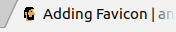

Hola, en este post mostraré el cómo agregar un favicon a tu blog bajo gohugo, en mi caso hice una imagen de 30x30.

Cómo generarlo
Con esta imagen con formato png, lo procesé en esta web para pasarlo a formato ico:
Cómo agregarlo
Luego de seguir los pasos indicados en esa dirección, descargará el archivo que necesitamos y lo copio a esta ruta (tomando la carpeta de mi sitio):
~ cp ~/Downloads/favicon.ico ~/mysites/andru255.github.io/themes/hugo-classic/favicon.ico
Agregándolo por HTML
Agregamos dentro del tag head en el archivo ~/mysites/andru255.github.io/themes/hugo-classic/layouts/partials/header.html, justo antes del tag title lo siguiente:
<link rel="shortcut icon" type="image/x-icon" href="{{ "/favicon.ico" | relURL }}" />
Con esta declaración HTML indicamos al navegador que My sitio tiene su propio favicon, por favor no muestres tu favicon por defecto, gracias :)
Construccion y envío a github pages
Finalmente, sigo los pasos de cómo visualizarlo en local y envío mis cambios
Resultado final
En mi caso sea en local o por github pages logro visualizarlo:
